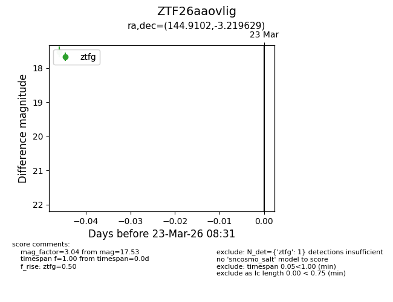
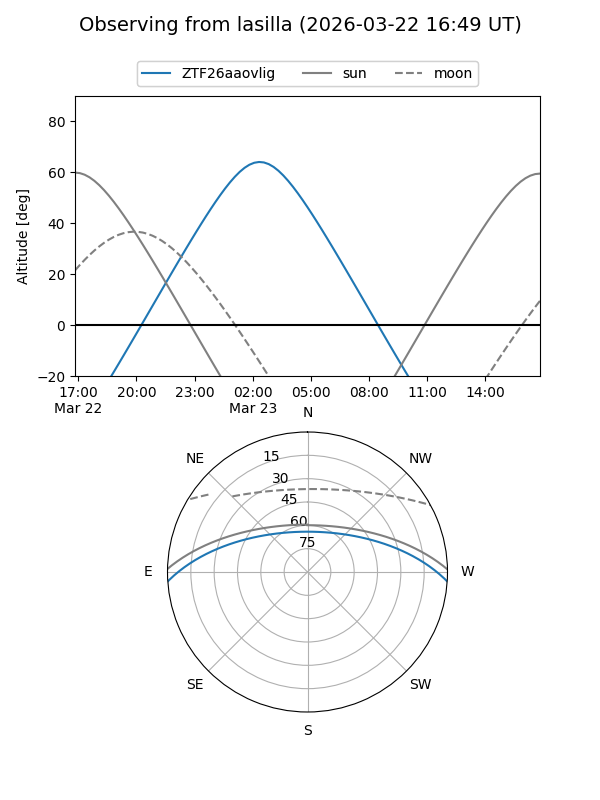
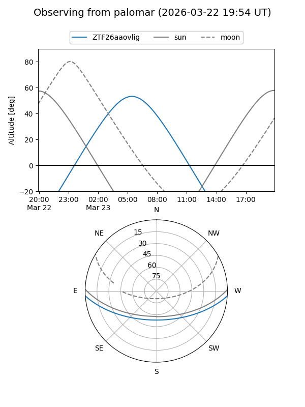

ZTF26aaovlig
Target ZTF26aaovlig at 2026-03-23 08:33
Aliases and brokers:
FINK: link
Lasair: link
ALeRCE: link
alt names
ZTF26aaovlig (ztf,fink_ztf)
Coordinates:
equatorial (ra, dec) = 144.9102,-3.21963
equatorial (HMS+DMS) = 09:39:38.46,-03:13:10.66
galactic (l, b) = (238.5134,+34.71909)
Flags:
Photometry:
last ztfg=17.53
1 ztfg detections
Lightcurve

Visibility


Additional plots